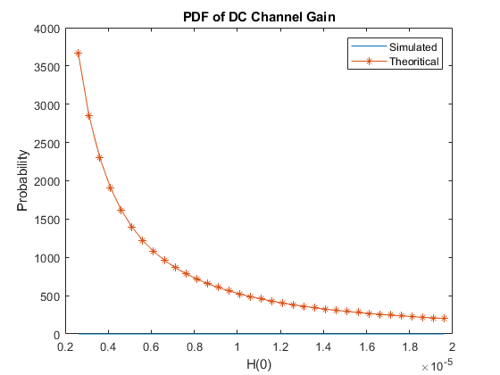
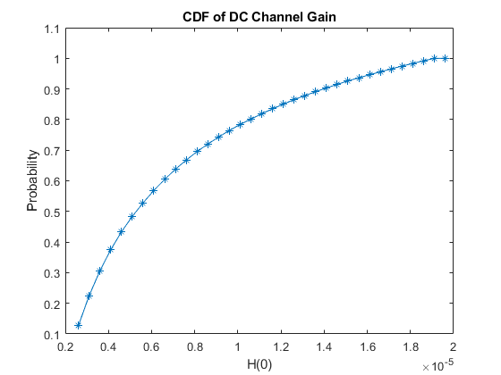
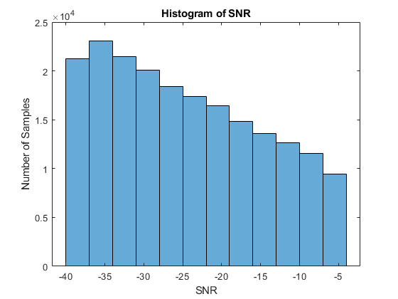
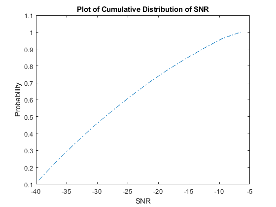

Contents
close all;
clear variables;
A = 0.0001;
THETA = 50;
THETA = deg2rad(THETA);
m = -1*(log(2)/log(cos(THETA)));
Ts = 1;
Psi_c = 60;
Psi_c = deg2rad(Psi_c);
n = 1.5;
height = 2.5;
samples = 200000;
radius = height*tan(THETA);
[x,y] = randcircle(samples, height*tan(THETA));
D = sqrt((x.^2+y.^2));
Phi = atan(D./height);
Psi = Phi;
d = sqrt(D.^2 + height^2);
G = zeros(1,samples);
H = zeros(1,samples);
const1 = (1/(2*pi)* A * Ts);
for i=1:1:samples
if Psi(i) > Psi_c
G(i) = 0;
H(i) = 0;
else
G(i) = const1 * (n*n)/(sin(Psi_c)*sin(Psi_c));
H(i) = (G(i)*(m +1)*(height^(m+1)))/((d(i))^((m+3)));
end
end
count=1;
H = sort(H);
interval = min(H):0.0000005:max(H);
for i=1:1:length(interval)
max = interval(i)+0.0000005;
min = interval(i) - 0.0000005;
interval1(i) = 0;
for j=count:1:samples
if(H(j)>= min && H(j)< max)
interval1(i) = interval1(i) + 1;
count=count +1;
interval2(i)= count;
else
break;
end
end
interval1(i) = interval1(i)/samples;
interval2(i) = interval2(i)/samples;
end
PDF Theoritical
theoreticalPDF = theoriticalPDF(interval,const1,height,radius,m);
plot(interval,interval1,'-');
hold on
plot(interval,theoreticalPDF,'-*');
hold off
title("PDF of DC Channel Gain");
ylabel("Probability");
xlabel("H(0)");
legend("Simulated","Theoritical");
figure
plot(interval,interval2,'-*')
title("CDF of DC Channel Gain");
ylabel("Probability");
xlabel("H(0)");
 
SNR Calculation:
Pt=0.004;
R = 0.53;
B = 22000;
q = 1.6*(10^-19);
Pbg = 10^-9;
Pr = (H.^2).*(Pt);
SNR = 10*log10(((R^2)*Pr.^2)/(B*q*R*Pbg));
count=1;
MIN = SNR(1);
MAX = SNR(length(SNR));
min = MIN - 3;
max = MIN + 3;
i=1;
while count < length(SNR)
interval4(i) = (min + max)/2;
interval3(i) = 0;
for j=count:1:samples
if(SNR(j)>= min && SNR(j)< max)
count=count +1;
interval3(i)= count;
else
break;
end
end
interval3(i) = interval3(i)/samples;
i=i+1;
max = max + 3;
min = min + 3;
end
figure
histogram(SNR,12);
xlabel("SNR")
ylabel("Number of Samples")
title("Histogram of SNR")
figure
plot(interval4,interval3,'-.');
title("Plot of Cumulative Distribution of SNR")
ylabel("Probability");
xlabel("SNR");
 